Network Flows - Module 1 (Implementing Edmonds-Karp)
Lecture - 45
Network Flows - Module 1 (Implementing Edmonds-Karp)
(Refer Slide Time: 00:11)

Alright. Welcome to the last and the final segment of the first module in week 8. And here, we are going to essentially implement the Edmonds-Karp approach to finding a maximum flow in a flow network. So, let us get right to it. You can look up this code, as usual, on the official repository for the website. And if you want something to test it against, you can do that. I mean this, the main function is really designed to take input for this problem, called internet bandwidth.
This is UVa 820, and that is something that you can try your code against as well. It is essentially very visibly a max flow problem. So, I am not even going to go through the problem statement for you because it is essentially telling you that there are computers and they are connected through wires. And each of these wires has a certain bandwidth, and what is the maximum browsing speed that you can achieve.
So essentially, once you read through it, you, basically, know that you have to set your computers as being the vertices and the connections being the edges, and the bandwidth of the connections are the capacities. And I think the source and the target vertices are given specific IDs. So essentially, it is very, very transparent that it is a max flow problem.
So because of this, we will focus our entire attention on basically solving the max flow problem. And will not talk about internet bandwidth specifically anymore. But if you have any difficulties in either parsing the input or passing on the input data into the max flow functions, or even presenting the output, you can always refer to the main function for this code that I will be presenting, which you can find at the usual place. It is the official code repository for this course.
So hopefully, that will help. And if anything is unclear despite that, then I always welcome you to post your questions as comments on this video. Or you could also use the Discord community if you are watching this during an active run of the course.
(Refer Slide Time: 2:13 and 3:49)
 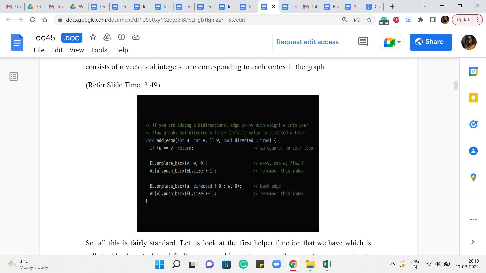
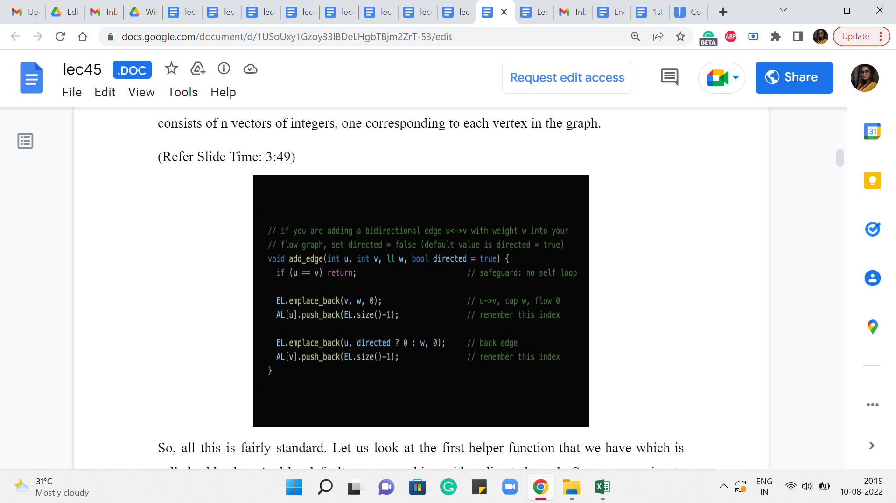
So with that said, let us actually take a look at the implementation. So, to begin with, we have the max flow class, which has the following private entities. So, V is just the number of vertices in the graph, EL & AL, you might recognize the shorthands for edge lists and adjacency lists. The way we implement this here is probably slightly different from what you are already used to. So, you may want to pay attention as we go along.
Then we have a vector d, which is essentially going to be the distance array for the BFS procedure. Now you also see something called ‘last.’ It is here because I just want to tell you to ignore it. It is something that is useful for Dinic’s implementation. But we would not really be going over that. But you might still see this variable in the code base, and you might wonder what it is about. So, I just left it in here to tell you to not worry about it.
Now the last thing you see here is a vector of integer pairs called ‘p.’ This is some sort of a parent array, which will help us do the backtracking that we need to do for going along an S-T path, finding the bottleneck capacity and all of that. So, those are essentially the main entities that we will be working with.
So, the other thing that you see here is the constructor that is going to be called whenever you create a max flow object, and this essentially just sets the scene and clears the ground for other information to come in. And, in particular, it also makes sure that the adjacency list consists of n vectors of integers, one corresponding to each vertex in the graph.
So, all this is fairly standard. Let us look at the first helper function that we have, which is called add_edge. And by default, we are working with a directed graph. So, we are going to assume that when you are adding the edge u comma v, you really mean the edge from u to v. However, we do have a parameter at the end called ‘directed.’ It is a Boolean value, which you can set to false to indicate that you actually want to add an undirected edge.
Now I did not mention this explicitly but everything we talked about goes through for undirected graphs in a natural way. All you have to do is basically treat the undirected edges as bi-directional edges, going both ways. And you set up their capacities to be equal to the capacity of the original undirected edge that you were working with.
I am going to leave it as a bit of an exercise for you to figure out how everything plays out if you were working with an undirected graph instead of a directed one. But for the purposes of the discussion that we are going to have, what we are going to be thinking of working with is essentially the default setting of directed graphs.
So, essentially what we have here is a directive to add an edge from ‘u’ to ‘v,’ with a capacity of ‘w.’ That is what we want to do. And, okay, so, the first thing that we do here is a sanity check, which says that we do not want to permit self-loop. So, if ‘u’ is ‘v,’ we then do nothing. But otherwise what we want to do is, actually, add this edge to our system. And it is probably a little hard to tell what is going on here by just looking at the code. So, I am going to show you a picture.
(Refer Slide Time: 5:29)

And so here is what is going on. So, on the one hand, we have the edge list. What the edge list is storing is, it is storing the information about the tails of the edges and the capacity and the flow – it is storing these three pieces of information. And the adjacency list for the head of the edge, which is from where the edge is originating – that is essentially going to have a pointer to the entry in the edge list that is recording the tail of the edge.
So, you could now go back and tally this picture with the code. You can see that the edge list is getting v comma w comma 0. That basically corresponds to the tail of the edge, the capacity of this edge, whose head we do not know anything about so far. And the flow because we are just starting out is, the trivial flow and it has a value of 0. And now we complete the picture for this edge, by adding the index of this latest entry into the edge list, to the adjacency list of ‘u.’
So, that, basically, completes the connection from ‘u’ to ‘v’ essentially. And we do the same for the back edge actually. So, we do this in the other direction as well. But the way we do this is that we are just a little bit careful about what capacity we set for the edge. So, if it is a directed edge, then the back edge is going to have a capacity of 0, as we just discussed.
But on the other hand, if this is a bi-directional edge meaning that it is, basically, two sides of an undirected edge, then we want to set the capacity of the back edge to be the same as the capacity of the original one. So, that is why you see this little snippet here, which says that if directed is true, then set the capacity of this edge to 0. This is really an artificially introduced back edge.
On the other hand, if it is not directed, it is an undirected graph, then set the capacity of this edge to be w, which is the same as the capacity of the original undirected edge. So that is, essentially, how we add edges into this system. And now the next helper function I want to talk about is the BFS component. So, remember that at every iteration, one of the crucial things that we do is to check if the residual graph has an S-T path. And we do that by initiating a BFS from the source vertex S.
(Refer Slide Time: 7:55)

So, I am skipping here the initializations, which are pretty standard. So, you initialize the distance array, the parent array, and make sure that the queue has the source vertex loaded onto it, to begin with. And that the distance of the source vertex is set to 0. So with that in place, really, the heart of the BFS algorithm is this ‘while’ loop here, which keeps going as long as the queue has something to offer.
And the vertex u is now the vertex at the front of the queue which is being currently processed. And a lot of this should look familiar because we have talked about BFS before. So, this is more of both a recap as well as the adaptations that we have to make in our context here. So, the first thing, for example, is that if the vertex that is being processed currently is the vertex ‘t,’ which is the target vertex, then we can actually just break out of this loop.
Because we have found what we were looking for. We wanted to know if t was reachable from s, and so this is a done deal. Otherwise what we are going to do is continue in the normal BFS style. So, we explore every vertex on the adjacency list of u. These are original neighbors of u. And we are going to initialize the variables v capacity and flow to being the label of the neighbor or the capacity of the edge from u to v, and the current flow through this edge, respectively, by just looking up the information in the edge list, which actually has this tuple, and contains this information in this order.
Now what we are going to do is, basically normally in BFS, we would check if v was a visited vertex and if it was not visited then we would process it and if it was already visited then we would continue. So, that is essentially what is happening here, except – so the d of v = -1 is the familiar condition of requiring that v is not a visited vertex. But you also see an additional condition which says that the residual capacity, which is given by the difference between the capacity and the flow is strictly greater than 0.
So, if you remember, when we were describing the algorithm, we said that if the residual capacity of some edge becomes 0, then we might as well just delete this edge to remember that this is not a usable edge anymore. And what we are going to do here is, whenever this happens we are not going to actually remove the edges from either the edge list or the adjacency lists because that is just painful to keep track of.
But because of this notice that we may therefore have a lot of junk edges in our system, edges that are not really usable because their residual capacities are currently 0. So, in the bargain of this convenience of not having to actually delete edges when their capacities come down to 0, what we have to do is, whenever we are about to use an edge, we have to sanity check first as to whether it is even a usable edge or not.
So, that is what the first component of this condition is doing. So, if both of these conditions are met then we have that v is an unvisited vertex. And the edge from ‘u’ to ‘v’ is an edge with non-trivial residual capacity. That means that this is an edge that we can work with. So, we are going to proceed and do the usual BFS things that we do. So, in particular, we set the distance we push v onto the queue. And we also set the parent information for v.
So, normally this would have just been the label of the vertex u: ‘u’ is the vertex that is responsible for bringing v onto the queue. But because of the funny way in which we are storing this information, which is spliced across the adjacency list and the edge list, for convenience, we are also going to store in the parent information, the value of the index of the edge from u to v, in the edge list.
So, as we will see later this will help us quickly retrieve all the relevant information about this edge that was really responsible for bringing v into the queue. And as you can imagine, this will be particularly useful when we are backtracking our way through an S-T path in due course.
So, now that BFS is done, let us talk about the function that will help us actually send an augmenting flow through an S-T path. So, remember the first thing that we do is, use BFS to check if t is reachable from s and if so, then what we want to do is actually look at an S-T path, a shortest S-T path, and find the bottleneck edge on that S-T path and update the values of the flows along all of the edges on this path. That is essentially what we want to do next.
(Refer Slide Time: 12:33)

And that is going to be handled for us with this function called ‘send_one_flow’ from s to t. And it has a third parameter f, which by default is initialized to infinity. This f is essentially what is going to keep track of the bottleneck capacity for us. So to begin with, we do not have any bottlenecks, we do not know what is going on at all.
But as we find our way through the path, this f will keep getting updated. And the reason it is being passed as a parameter to this function is because the easiest way to do this is essentially by using this function recursively as we will see. So, this f will essentially help us keep track of what we have found so far, in recursion.
So for now, let us actually ignore this base case, which is the opening line of this function. It basically says that if s and t are the same, then we return f and this will make more sense in the end. So, I promise that we will come back to this. So now, let us look at what is happening in the next line. It seems like we are trying to retrieve some information about the parent of t. Why might you want to do this?
Well, it is reasonably natural because we said we want to do something along the shortest S-T path. We have just finished running BFS in the previous step. So, the parent pointers from t along this BFS tree will essentially help us climb back towards s, via the shortest path. So, that is why we are interested in the parent of t because it is going to help us, you know, start making progress on this S-T path that we are eventually trying to find.
So, just to understand how this works, remember how did we store the parent of t or the parent of any vertex when we were doing BFS, we stored it as a pair of integers. The first one was the label of the parent and the other one was a pointer to the, or it was the value of the index of the edge from the parent to the child, in the edge list.
(Refer Slide Time: 14:33)
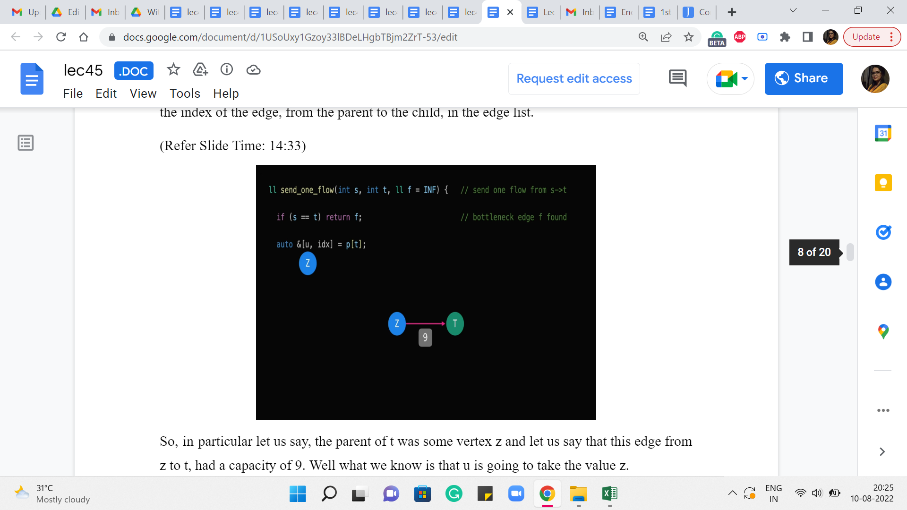
So, in particular, let us say, the parent of t was some vertex z, and let us say that this edge from z to t, had a capacity of 9. Well, what we know is that ‘u’ is going to take the value z.
(Refer Slide Time: 14:47)
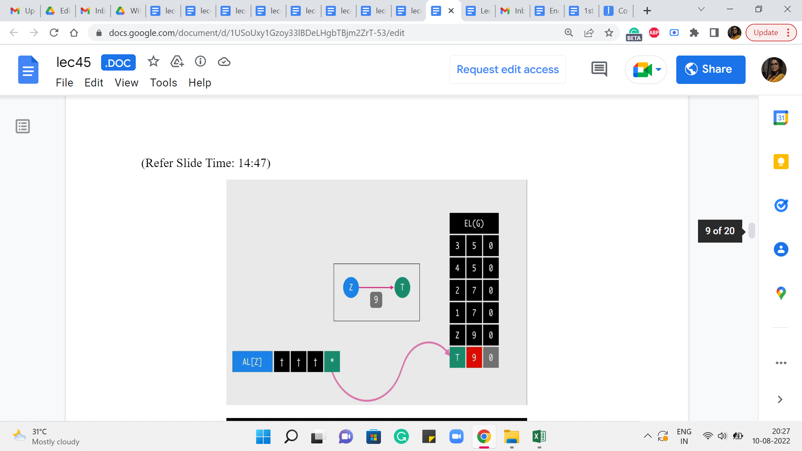 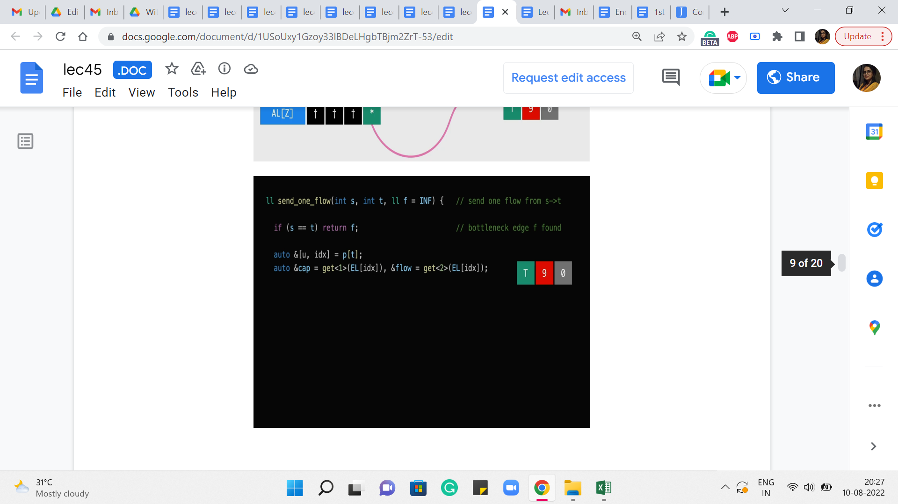
 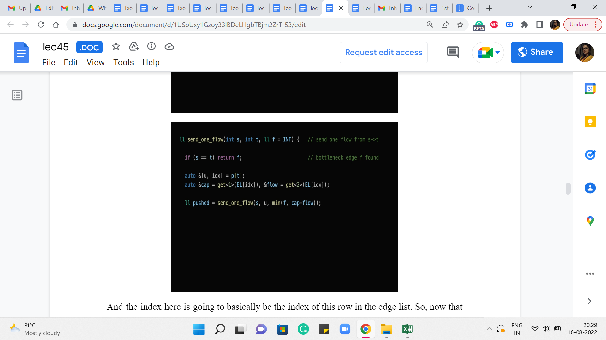
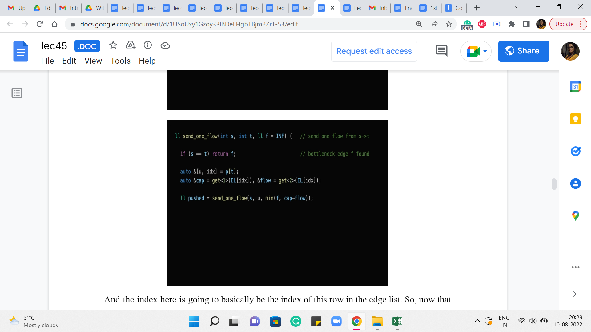
And the index here is going to basically be the index of this row in the edge list. So, now that we know this we can use this information to retrieve the value of the flow going through this edge from the parent to t, and also the capacity of this edge. So, the next line of code does just that. So, it is going to look up the row or the entry in the edge list corresponding to this index ‘idx.’ And it is going to, that is a tuple involving three numbers or three values. And this ‘get of 1’ and ‘get of 2’ are going to get hold of the second and the third values respectively. And that corresponds to the capacity and the flow essentially by design.
So, hopefully, this line here makes sense. And then what we want to do is essentially recurse. So, what we want to say is, now let us try to push a flow from the source to the parent of t, right. And what we are going to do is, also make sure that this recursive call is aware of the bottleneck constraint that we have so far.
So, so far, we know that the bottleneck was supposed to be, you know, f, given by f that is the parameter that was passed to the current call. And we also know that the current edge that we are considering, that is the one from the parent of t to t, has a certain capacity and a certain flow and therefore it has a residual capacity of the difference between these two numbers.
So, in case that is a tighter value, if that is smaller than f then that is the new bottleneck. Otherwise, we just stick to f as being the best upper bound that we have on the bottleneck. So, that explains, why we are taking the min of these two values and passing that on as the fresh bottleneck information to this recursive call.
(Refer Slide Time: 16:39)
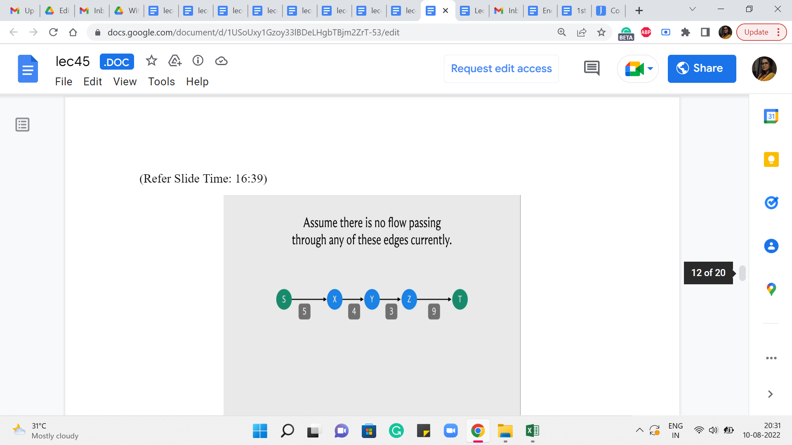 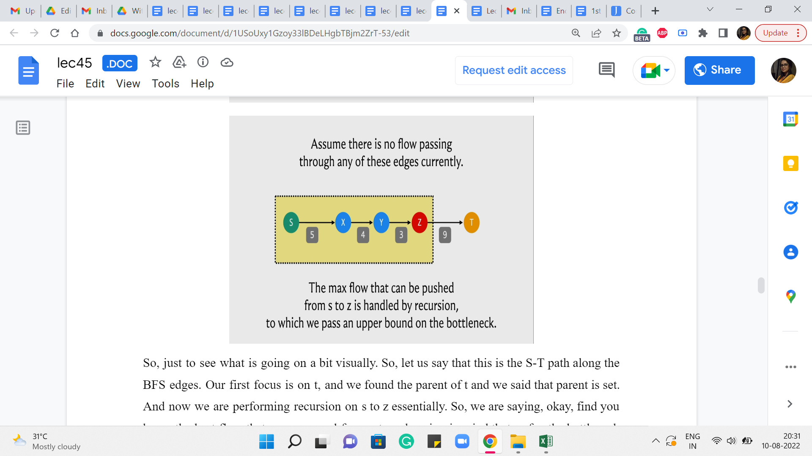
So, just to see what is going on a bit visually. So, let us say that this is the S-T path along the BFS edges. Our first focus is on t, and we found the parent of t and we said that parent is z. And now we are performing recursion on s to z essentially. So, we are saying: Okay. Find, you know, the best flow that you can send from s to z, keeping in mind that so far, the bottleneck that we have discovered is 9. Right.
So essentially, this function call was initialized with an, you know, initial bottleneck of infinity, which is just to say that we do not know anything about the bottleneck. So, the difference between the capacity and the flow of the edge from z to t is 9 because the capacity is 9 and there is no flow through this edge currently.
(Refer Slide Time: 17:33)
 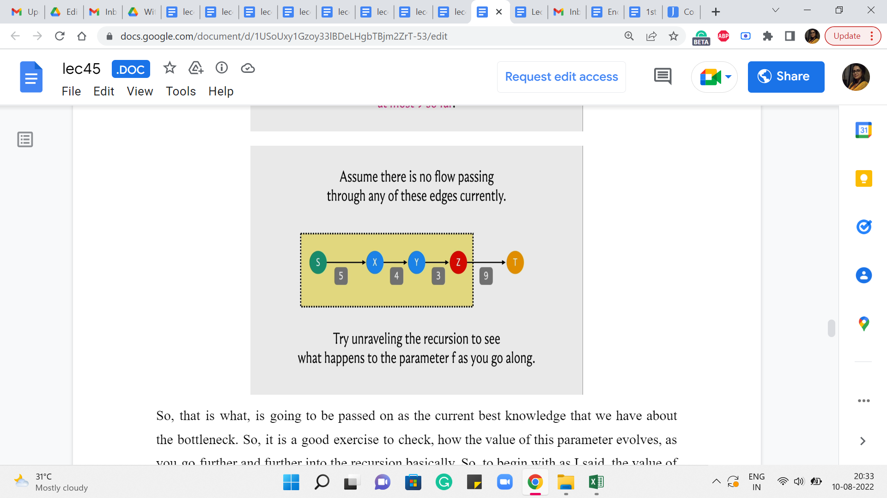
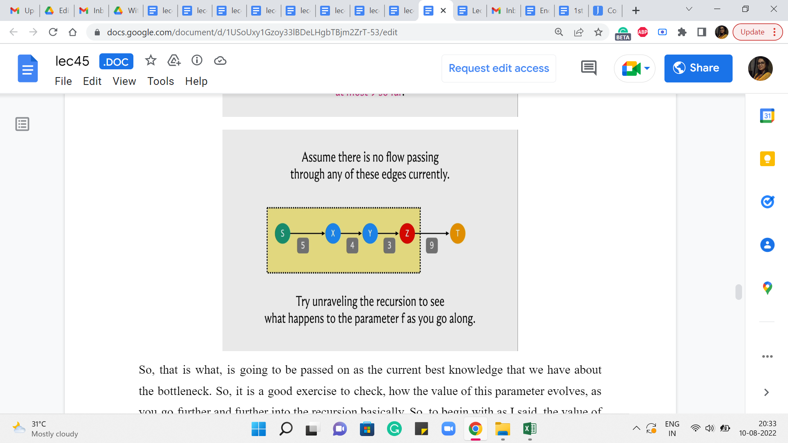
So, that is what is going to be passed on as the current best knowledge that we have about the bottleneck. So, it is a good exercise to check how the value of this parameter evolves, as you go further and further into the recursion basically. So, to begin with, as I said, the value of f was infinity. It got overridden by 9 and as you go further along, whenever you encounter an edge whose residual capacity is more than the value that was passed on or is equal, then the value of the parameter does not change.
But every time you encounter an edge whose residual capacity is smaller than the value that came in, then this parameter value is going to get overridden. At some point, you keep going back and you get to a point where the parent pointer points to S and that is the point when we know that S = T and the value of f that came in, at this stage is, in fact, the value of the residual capacity of the edge that had the smallest such value in this path. So, at this point, we have really found out the value of the bottleneck capacity.
(Refer Slide Time: 18:37)

And so now if you go back to the code hopefully that first line makes sense. So, when s = t that just means that you have come all the way to the start and you have finished exploring this path, and the value of f at this point is the bottleneck capacity. So, that is what we are going to return. So, you can imagine that the value of this variable ‘pushed’ here is going to be the value of the bottleneck capacity. And now that we have this value all that remains to be done is really to adjust the flows.
(Refer Slide Time: 19:08)

So, in particular, the flow of the current edge that we are working with needs to be incremented by ‘pushed.’ So, as you can guess that is going to affect the value of this number here.
(Refer Slide Time: 19:19)
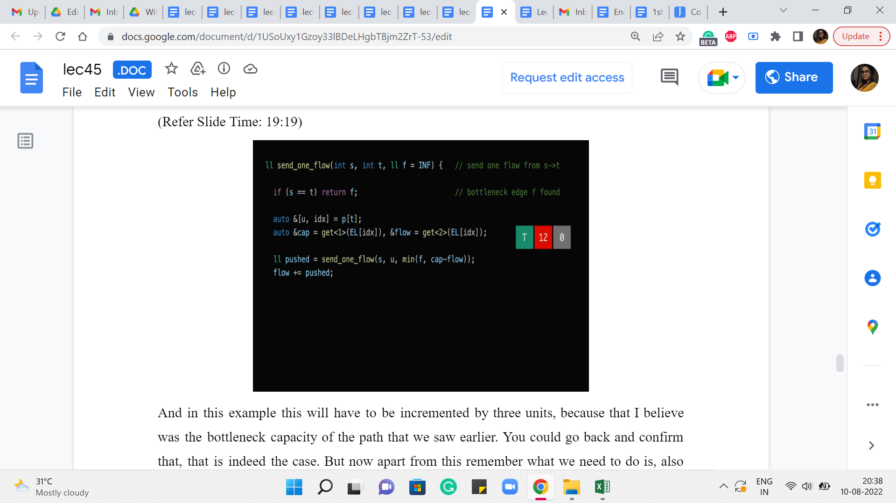
And in this example, this will have to be incremented by three units because that I believe was the bottleneck capacity of the path that we saw earlier. You could go back and confirm that that is indeed the case. But now apart from this remember what we need to do is also make sure that the edge that is going in the opposite direction has its flow decremented by the same amount. Remember we discussed that this is how everything stays nice and synced up exactly, as prescribed by the algorithm. So that is what we want to try and do next.
(Refer Slide Time: 19:47)

So, notice here that we have introduced a variable called ‘rflow’, which is presumably the flow that is going through the reversed edge. And the way we do that is by looking up the edge list at the index that is given by ’XOR’ing the current index with 1.
(Refer Slide Time: 20:10)
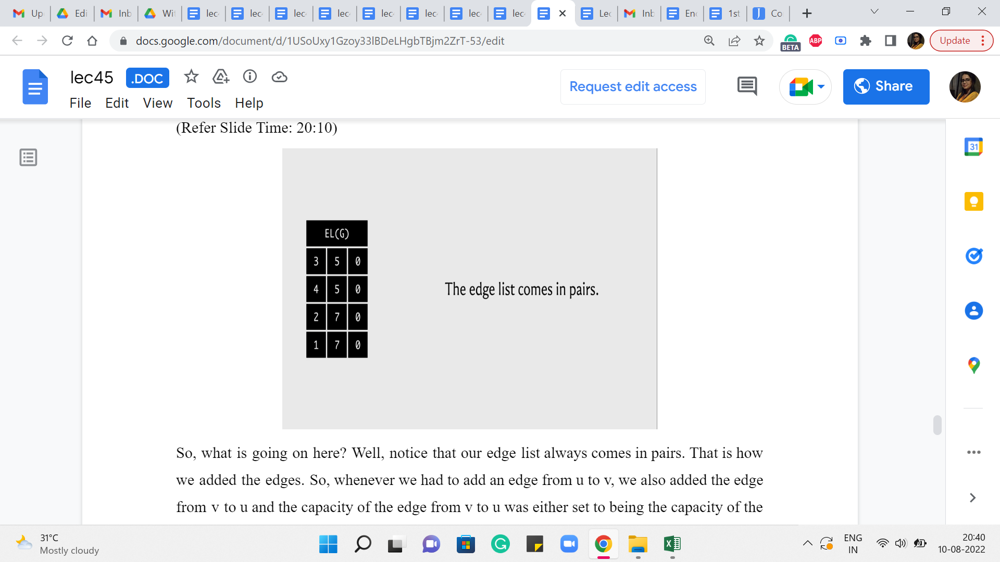
So, what is going on here? Well, notice that our edge list always comes in pairs. That is how we added the edges. Right. So, whenever we had to add an edge from u to v, we also added the edge from v to u. And the capacity of the edge from v to u was either set to being the capacity of the edge from u to v if the graph was undirected. Or it was set to 0 if the graph was directed in which case this would actually be modeling the back edge in the residual graph.
(Refer Slide Time: 20:41)


In any case, the point is that when you want to be updating the value of the partner reverse edge then essentially you are looking for an adjacent entry in the edge list in one of the two directions, depending on which edge you started with. So, let us say that indexing starts from 0 and you are currently working with the edge whose index is 3, then the edge that you are looking for has an index of 2. On the other hand, if you start with an edge, whose index is 2 then you are looking for the edge whose index is 3.
(Refer Slide Time: 21:06)

So, that is exactly what doing an XOR with one gives you. It gives you, essentially, the other partner edge by flipping the last bit. Okay. So, that is how you get to the partner edge succinctly. And all you have to do now is make sure that the flow through that partner edge is decremented by ‘pushed,’ essentially by the same value as the forward edge flow was incremented.
And at this point, you can return ‘pushed’ and you would be done. So that is what is going on with the send_one_flow function. And so this enables us to actually push flow through the paths that we found from the BFS procedure that we did earlier.
(Refer Slide Time: 21:51)
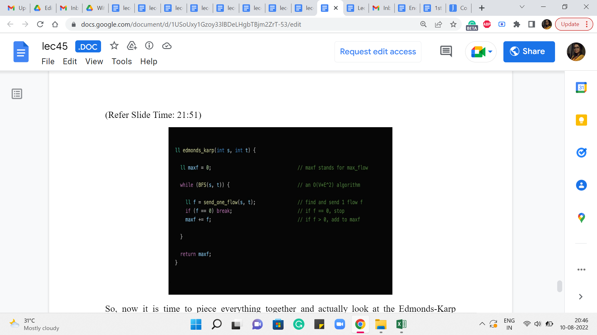
So, now it is time to piece everything together and actually look at the Edmonds-Karp algorithm now that we have all the specific pieces in place. So, as we said, to begin with, the maximum flow is initialized to 0. We have not really done anything yet. And now what the algorithm is basically saying is the following.
For as long as you can find a path from s to t in the residual graph, find the shortest such path and route as much flow as you can through that path and keep going for as long as possible. Right. So, the part about finding the shortest S-T path is handled by the BFS function. And it is written in such a way that if you cannot reach t from s then, this function returns a false value and that is when the lifetime of this while loop comes to an end.
But otherwise, it is going to keep going and what you do within the loop is, basically, execute the send_one_flow function, the recursive one that we just discussed. And what that is going to do is find the bottleneck capacity on this path from s to t. And it is going to route that much additional flow through this path, making adjustments as necessary for the edges that go in the opposite direction as well.
And in this code, you can see that there is a redundant check. Notice that you do not really need to check if f is 0 because the only time that will happen is if you had an edge on the S-T path that actually had a residual capacity of 0. But remember that every edge that we have on this S-T path, is an edge that we discovered by following a parent pointer from the BFS traversal that we just did.
And in the BFS traversal, we only explored those edges which had a non-trivial residual capacity. So, all of the edges on our S-T path are going to have a non-trivial residual capacity. So, this check here is really an extra and redundant check and the algorithm is going to work as advertised even without it.
Remember to increment your max flow value by f because f is the amount of flow that you manage to push through the S-T path that you just discovered, and that is the amount by which the value of your flow has increased in this iteration. So, that is what is happening in the third line inside the while loop.
Once you break out of the while loop, there is nothing left to be done. You cannot implement the flow anymore and you can return max f as the final answer. Once again that this actually works correctly every time does require an argument, which we have skipped but, as always, you can look this up. There are some very interesting resources that have been linked to in the description of the video. So, please feel free to explore, if you are curious about why this actually works all the time, all right.
So, that is pretty much it that brings us to the end of the implementation of the Edmonds-Karp max flow algorithm. And now what we are going to do is, put this to good use by discussing a couple of problems. So, there will be one implementation-based problem that we will discuss and there will be one, which is just a problem I wanted to share with you in principle because it is so much fun. But I have not really seen a contest problem around it. So that is going to be just more of a theoretical discussion. But when we come back next week, we will again be able to expand on this algorithm and use it in some other ways as well, and there will be some more implementation to be talked about in week 9. But for now, let us immediately leverage this algorithm to solve a matching-based problem on Codeforces. That is up next in the second module. See you there!